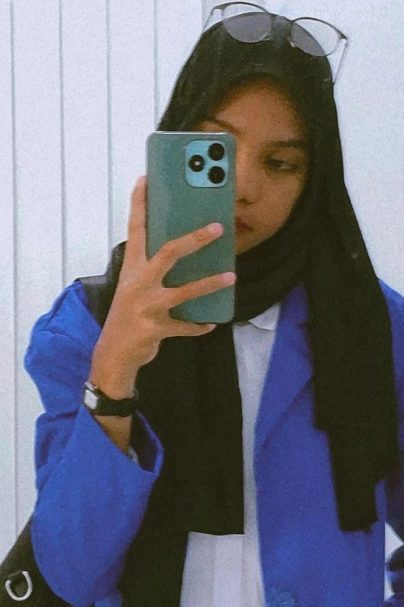

Design My Website
Harap baca web saya dengan teliti!
Foto & Data Diri

Nama : Sarfia
Nim : 16323043
Agama : Islam
Alamat : Danaweria
RT/RW : 02/00
Kecamatan : Fakfak Tengah
Status : Always Singel
Nomor WhatsApp : 082264939363
Asal Sekolah : SMA Negeri 1 Fakfak
Jurusan : D3 Manajemen Informatika
TTL : Fongkaniwa / 21 November 2004
Asal daerah : Sulawesi Tenggara
Hoby :
1. Nonton Drama Korea/China, Horor
2. Membaca cerita Wattpad
3. Pencinta Kpop
Cita-Cita : Menikah dengan Ceo Korea, ganteng, Islam dari lahir
Moto hidup : Hidup itu opsional. Apa yang di pilih dari awal, itu yang di peroleh di akhir.
Audio dan Video
Selamat menikmati Sound Video dan Song yang telah saya sediakan
Tentang Saya
Perkenalkan, nama saya sarfia tapi sering di panggil Fifi di kampus.Saya Anak ke 4 dari 7 bersaudara, yupp saya anak tengah.Saya tinggal di kota Fakfak ini
sejak saya masih berusia 6 tahun tepat nya saya ikut orang tua saya merantau di kota Fakfak
ini sejak tahun 2010. Awal nya saya tinggal di jalan Fakfak kokas akan tetapi di tahun 2023 Awal
saya beserta keluarga saya pindah ke sebrang/ Danaweria. Saya tidak memilki kemampuan yang
patut dijadikan panutan. Tergolong otak pas rata-rata, tidak pintar, tidak juga bodoh.
Saya orangnya pemalas. Lebih suka rebahan sambil menonton drama Korea atau drama China.
Saya tertarik dengan dunia per-kpop an, i love BTS. Keseharian saya, Bangun, mandi, ke kampus,
kalau pulang nya siang saya biasanya lanjut jaga jualan gantikan mamah saya. Kalau libur dan
tidak ada tugas rumah, saya akan menggantikan mama saya berjualan dari pagi sampai sore.
Saya gampang bersosialisasi akan tetapi saya lebih suka kesunyian. Saya takut kecoak apalagi
ketika dia terbang, dan saya tidak merasa geli/ takut dengan cicak. Ada satu hewan yang buat
saya penasaran dan sangat ingin saya coba makan yaitu ulat sagu. Saya suka sesuatu yang
menantang,Ular menurut saya cukup menantang adrenalin saya. akan tetapi untuk sekarang
saya hanya berani memegang ular jinak yang memiliki pawang, bukan ular liar yang baru ditemukan.
Berita Terbaru
Ini adalah berita pembunuhan pada hari ini tanggal